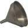

DnD_move 1.2.0 DnD_move-1_2_0.zip J.P Pourrez 2017-11-26
Modifier l'ordre des catégories, plugins et pages statiques à l'aide de la souris (Drag and Drop)
1.1.2
DnD_move-1_1_2.zip J.P Pourrez 2017-09-23
Modifier l'ordre des catégories, plugins et pages statiques à l'aide de la souris (Drag and Drop)
1.1.1
DnD_move-1_1_1.zip J.P Pourrez 2017-08-03
Modifier l'ordre des catégories, plugins et pages statiques à l'aide de la souris (Drag and Drop)
1.1
DnD_move-1_1.zip J.P Pourrez 2017-07-08
Modifier l'ordre des catégories, plugins et pages statiques à l'aide de la souris (Drag and Drop)
1.0
DnD_move-1_0.zip J.P Pourrez 2017-06-18
Modifier l'ordre des catégories, plugins et pages statiques à l'aide de la souris (Drag and Drop)
autotweet 1.0 autotweet-1_0.zip Renaud Mioque 2014-07-06
Ce plugin permet de twitter automatiquement les articles qui sont postés
captchaImage 1.106 captchaImage-1_106.zip Jean-Pierre Pourrez
2015-11-16
Image Captcha to protect against malicious bots and others. Version testée avec Pluxml 5.4
1.20.1
captchaImage-1_20_1.zip Jean-Pierre Pourrez 2017-08-17
Image Captcha to protect against malicious bots and others.
1.20
captchaImage-1_20.zip Jean-Pierre Pourrez 2017-05-23
Image Captcha to protect against malicious bots and others.
1.1
captchaImage-1_1.zip Jean-Pierre Pourrez
2015-09-29
Image Captcha to protect against malicious bots and others. Version testée avec Pluxml 5.4
1.0
captchaImage-1_0.zip Jean-Pierre P.
2014-07-06
Image Captcha to protect against malicious bots and others
chamPlus 0.88 chamPlus-0_88.zip J.P. Pourrez 2017-01-02
Ajoute des champs personnalisés aux articles et aux pages statiques. Gére les champs médias
Pluxml 5.4, 5.5 - HTML5, PHP >= 5.4
0.86
chamPlus-0_86.zip J.P. Pourrez 2016-04-03
Ajoute des champs personnalisés aux articles et aux pages statiques. Gére les champs médias
Pluxml 5.4, 5.5 - HTML5, PHP >= 5.4
0.81
chamPlus-0_81.zip J.P. Pourrez 2016-01-14
Ajoute des champs personnalisés aux articles et aux pages statiques. Gére les champs médias
Pluxml 5.4, 5.5beta - HTML5, PHP >= 5.4
0.77
chamPlus-0_77.zip J.P. Pourrez 2016-01-08
Ajoute des champs personnalisés aux articles et aux pages statiques. Gére les champs médias
Pluxml 5.4, 5.5beta - HTML5, PHP >= 5.4
0.62
chamPlus-0_62.zip J.P. Pourrez 2015-12-08
Ajoute des champs personnalisés aux articles et aux pages statiques. Gére les champs médias
Pluxml 5.4, HTML5, PHP 5.4
0.51
chamPlus-0_51.zip J.P. Pourrez 2015-11-24
Ajoute des champs personnalisés aux articles et aux pages statiques.
Pluxml 5.4, HTML5, PHP 5.6
codemirror 2.1.2 codemirror-2_1_2.zip Jean-Pierre Pourrez 2018-07-09
Plugin pour CodeMirror 5.39.0. Editeur de code avec coloration syntaxique, auto-complétion et repli de code (folding).
2.1.1
codemirror-2_1_1.zip Jean-Pierre Pourrez 2018-06-24
Plugin pour CodeMirror 5.39.0. Editeur de code avec coloration syntaxique, auto-complétion et repli de code (folding).
2.0.5
codemirror-2_0_5.zip Jean-Pierre Pourrez 2017-11-25
Plugin pour CodeMirror. Editeur de code avec coloration syntaxique, auto-complétion et repli de code (folding).
2.0.2
codemirror-2_0_2.zip Jean-Pierre Pourrez 2017-11-23
Plugin pour CodeMirror. Editeur de code avec coloration syntaxique, auto-complétion et repli de code (folding).
2.0.1
codemirror-2_0_1.zip Jean-Pierre Pourrez 2017-11-06
Plugin pour CodeMirror. Editeur de code avec coloration syntaxique, auto-complétion et repli de code (folding).
2.0
codemirror-2_0.zip Jean-Pierre Pourrez 2017-08-06
Plugin pour CodeMirror. Editeur de code avec coloration syntaxique, auto-complétion et repli de code (folding).
1.41
codemirror-1_41.zip Jean-Pierre Pourrez 2016-03-12
Plugin pour CodeMirror v5.12. Editeur de code avec coloration syntaxique, auto-complétion et repli de code (folding).
Pluxml 5.4 et plus
1.20
codemirror-1_20.zip Jean-Pierre Pourrez 2015-10-26
Plugin pour CodeMirror v5.7. Editeur de code avec coloration syntaxique, auto-complétion et repli de code (folding).
Pluxml 5.4
1.07
codemirror-1_07.zip Jean-Pierre Pourrez 2014-07-06
Plugin pour CodeMirror v3.22. Editeur de code avec coloration syntaxique, auto-complétion et repli de code (folding).
1.05
codemirror-1_05.zip Jean-Pierre Pourrez 2015-02-15
Plugin pour CodeMirror v3.22. Editeur de code avec coloration syntaxique, auto-complétion et repli de code (folding).
colorBox 1.35 colorBox-1_35.zip Jean-Pierre Pourrez 2016-01-06
A lightweight customizable lightbox plugin for jQuery. Colorbox version 1.6.3 - 2015/07/27 - Gestion galerie de photos - Comptabible Pluxml 5.4
JQuery
1.30
colorBox-1_30.zip Jean-Pierre Pourrez 2016-01-02
A lightweight customizable lightbox plugin for jQuery. Colorbox version 1.6.3 - 2015/07/27 - Gestion galerie de photos - Comptabible Pluxml 5.4
JQuery
1.21
colorBox-1_21.zip Jean-Pierre Pourrez 2015-10-08
A lightweight customizable lightbox plugin for jQuery. Colorbox version 1.6.3 - 2015/07/27 - Comptabible Pluxml 5.4
1.12
colorBox-1_12.zip Jean-Pierre Pourrez 2015-10-16
A lightweight customizable lightbox plugin for jQuery. Colorbox version 1.6.3 - 2015/07/27 - Comptabible Pluxml 5.4
JQuery
1.10
colorBox-1_10.zip Jean-Pierre P. 2014-07-06
A lightweight customizable lightbox plugin for jQuery. Colorbox version 1.5.6
cssControl 0.1 cssControl-0_1.zip Jean-Pierre Pourrez 2015-10-26
Contrôle la mise à jour des caches de feuilles CSS pour les plugins. Désactive le cache du navigateur
csv2table 1.02 csv2table-1_02.zip Jean-Pierre P.
2014-07-06
Dans une page statique, transforme un lien pointant vers un fichier au format csv en un tableau HTML. Le fichier peut être stocké dans le dossier documents ou sur un serveur distant.
1.01
csv2table-1_01.zip Jean-Pierre P.
2015-02-15
Dans une page statique, transforme un lien pointant vers un fichier au format csv en un tableau HTML. Le fichier peut être stocké dans le dossier documents ou sur un serveur distant.
datePicker 1.11 datePicker-1_11.zip Jean-Pierre P.
2016-02-09
Popups a calendar with the jQuery-UI widget.
1.0
datePicker-1_0.zip Jean-Pierre P.
2014-07-06
Popups a calendar with the jQuery-UI widget.
getDatas 1.0 getDatas-1_0.zip Jean-Pierre P. 2015-02-15
sauvegarde de votre dossier data
highlightJS 1.25 highlightJS-1_25.zip Jean-Pierre Pourrez 2015-11-16
Coloration syntaxique de lignes de code dans les pages HTML avec Highlight.js version 8.9.1
1.00
highlightJS-1_00.zip Jean-Pierre P. 2014-07-06
Coloration syntaxique dans les pages HTML.
html5uploader 1.22 html5uploader-1_22.zip CDATA[Jean-Pierre Pourrez 2017-08-14
Html5uploader. Glisser et déposer plusieus fichiers sur votre liste de médias.
1.21
html5uploader-1_21.zip Jean-Pierre Pourrez 2015-11-19
Html5uploader. Glisser et déposer plusieus fichiers sur votre liste demédias.
1.1
html5uploader-1_1.zip Jean-Pierre Pourrez 2014-07-06
Html5uploader.
kzAce 1.2.0 kzAce-1_2_0.zip J.P. Pourrez 2017-10-10
Editeur de code avec coloration syntaxique et complétion de code (Emmet)
1.1.1
kzAce-1_1_1.zip J.P. Pourrez 2017-09-05
Editeur de code avec coloration syntaxique et complétion de code (Emmet)
1.1.0
kzAce-1_1_0.zip J.P. Pourrez 2017-09-02
Editeur de code avec coloration syntaxique et complétion de code (Emmet)
kzCalendar 0.6.0 kzCalendar-0_6_0.zip J.P. Pourrez 2017-11-30
Calendrier
0.5.0
kzCalendar-0_5_0.zip J.P. Pourrez 2017-09-11
Calendrier
kzCaptcha 1.0.0 kzCaptcha-1_0_0.zip J.P. Pourrez 2018-01-31
Filtre anti-spam basé sur https://github.com/Gregwar/Captcha
 kzCommentsFilter 0.5.0 kzCommentsFilter-0_5_0.zip J.P. Pourrez 2017-12-23
Filtre les commentaires avant modération et validation, selon l'adresse Ip, le mail ou le site de l'expéditeur
kzContact 2.1.0 kzContact-2_1_0.zip Bazooka07 2018-11-15
Ajoute une page de contact
2.0.0
kzContact-2_0_0.zip Bazooka07 2018-02-24
Ajoute une page de contact
kzDownload 0.8.5 kzDownload-0_8_5.zip Bazooka07 2018-06-26
Crypte automatiquement l'url des fichiers à télécharger.
0.8.4
kzDownload-0_8_4.zip Bazooka07 2018-05-16
Crypte automatiquement l'url des fichiers à télécharger.
0.8.2
kzDownload-0_8_2.zip Bazooka07 2018-05-15
Crypte automatiquement l'url des fichiers à télécharger.
0.8.1
kzDownload-0_8_1.zip Bazooka07 2018-05-13
Crypte automatiquement l'url des fichiers à télécharger.
0.8.0
kzDownload-0_8_0.zip Bazooka07 2018-05-04
Crypte automatiquement l'url des fichiers à télécharger.
kzGallery 1.0.0 kzGallery-1_0_0.zip Bazooka07 2018-11-14
Associe à un ou plusieurs dossiers à un article ou une page statique pour créer des galerie photos.
0.8.4
kzGallery-0_8_4.zip Bazooka07 2018-05-27
Associe à un ou plusieurs dossiers à un article ou une page statique pour créer des galerie photos.
0.8.3
kzGallery-0_8_3.zip Bazooka07 2018-04-16
Associe à un ou plusieurs dossiers à un article ou une page statique pour créer des galerie photos.
0.8.2
kzGallery-0_8_2.zip Bazooka07 2018-04-09
Associe à un ou plusieurs dossiers à un article ou une page statique pour créer des galerie photos.
0.8.0
kzGallery-0_8_0.zip Bazooka07 2018-03-19
Associe à un ou plusieurs dossiers à un article ou une page statique pour créer des galerie photos.
kzIp2location 0.8.0 kzIp2location-0_8_0.zip J.P. Pourrez 2018-01-21
Extrait des informations de géolocalisation depuis la base de données libre distribuée par le site http://ip2location.com.
kzIpApiJS 1.0.0 kzIpApiJS-1_0_0.zip J.P. Pourrez 2018-01-11
Utilise le site http://ip-api.com pour obtenir des indications géographiques pour un lot (batch) de plusieurs adresses IP. Les requêtes se font côté navigateur à l'aide de Javascript. Pour géolocaliser les commentaires.
kzIpInfo 1.1.0 kzIpInfo-1_1_0.zip J.P. Pourrez 2018-01-23
Interroge le site https://ipinfo.io pour fournir des indications géographiques à partir d'une adresse IP. Utilise principalement du javascript. Donc aucune exigence côté serveur. Gére un cache pour les adresses IP. Tous les drapeaux sont rassemblés dans un sprite.
1.0.0
kzIpInfo-1_0_0.zip J.P. Pourrez 2018-01-07
Interroge le site http://ipinfo.io pour fournir des indications géographiques à partir d'une adresse IP. Utilise principalement du javascript. Donc aucune exigence côté serveur. Gére un cache pour les adresses IP. Tous les drapeaux sont rassemblés dans un sprite.
0.5.0
kzIpInfo-0_5_0.zip J.P. Pourrez 2017-12-30
Interroge le site http:://ipinfo.io pour fournir des indications géographiques à partir d'une adresse IP.
kzIpMaxMind 0.5.0 kzIpMaxMind-0_5_0.zip J.P. Pourrez 2018-01-04
Informations de géolocalisation extraites de la base de données libre GeoLite2, distribuée par le site http://maxmind.com.
kzLostPassword 1.0 kzLostPassword-1_0.zip Jean-Pierre Pierre 2018-03-14
Plugin pour obtenir un nouveau mot de passe
kzMailCommentAlert 0.8.1 kzMailCommentAlert-0_8_1.zip Bazooka07 2018-01-26
Etre alerté par courriel d'un nouveau commentaire pour un article.
0.5.0
kzMailCommentAlert-0_5_0.zip Bazooka07 2017-12-27
Etre alerté par courriel d'un nouveau commentaire d'un article auquel on a contribué.
kzOtPHP 0.9.0 kzOtPHP-0_9_0.zip J.P. Pourrez 2018-03-14
Double authentification basée sur HOTP et TOTP
0.8.1
kzOtPHP-0_8_1.zip J.P. Pourrez 2018-03-13
Double authentification basée sur HOTP et TOTP
0.8.0
kzOtPHP-0_8_0.zip J.P. Pourrez 2018-03-03
Double authentification basée sur HOTP et TOTP
kzSQLimport 0.6.0 kzSQLimport-0_6_0.zip Jean-Pierre Pourrez 2018-01-03
Import des données depuis un serveur SQL. Cette version est limitée à l'import depuis Spip-2.0. D'autres sources seront ajoutées ultérieurement.
0.5
kzSQLimport-0_5.zip Jean-Pierre Pourrez 2017-12-13
Import des données depuis un serveur SQL. Cette version est limitée à l'import depuis Spip-2.0. D'autres sources seront ajoutées ultérieurement.
kzU2F 0.8.1 kzU2F-0_8_1.zip Jean-Pierre Pourrez 2018-08-13
Authentification à 2 facteurs, par clé USB, basé sur le protocole U2F
kzUploader 1.1.3 kzUploader-1_1_3.zip J.P. Pourrez 2018-01-01
Installe un plugin ou un thème sur le serveur depuis le navigateur Web. Reconnait les archives de mime-type: application/zip et application/gzip (archives zip et tar.gz)
1.1.2
kzUploader-1_1_2.zip J.P. Pourrez 2017-11-29
Installe un plugin ou un thème sur le serveur depuis le navigateur Web. Reconnait les archives de mime-type: application/zip et application/gzip (archives zip et tar.gz)
1.1.1
kzUploader-1_1_1.zip J.P. Pourrez 2017-09-03
Installe un plugin ou un thème sur le serveur depuis le navigateur Web. Reconnait les archives de mime-type: application/zip et application/gzip (archives zip et tar.gz)
1.1.0
kzUploader-1_1_0.zip J.P. Pourrez 2017-08-03
Installe un plugin ou un thème sur le serveur depuis le navigateur Web. Reconnait les archives de mime-type: application/zip et application/gzip (archives zip et tar.gz)
1.0.3
kzUploader-1_0_3.zip J.P. Pourrez 2017-07-07
Installe un plugin ou un thème sur le serveur depuis le navigateur Web.
1.0.2
kzUploader-1_0_2.zip J.P. Pourrez 2017-07-07
Installe un plugin ou un thème sur le serveur depuis le navigateur Web.
1.0.1
kzUploader-1_0_1.zip J.P. Pourrez 2017-07-05
Installe un plugin ou un thème sur le serveur depuis le navigateur Web.
kzUrlify 0.5 kzUrlify-0_5_0.zip J.P. Pourrez 2017-09-07
Intégration de la librairie "https://github.com/jbroadway/urlify" pour normaliser les Urls quelque soit les alphabets employés (cyrillic, allemand, polonais, ...).
lesFables 1.02 lesFables-1_02.zip Jean-Pierre Pourrez
2015-10-16
Génère des articles et des catégories à partir des fables de la Fontaine.
1.01
lesFables-1_01.zip Jean-Pierre P.
2014-07-06
Génère des articles et des catégories à partir des fables de la Fontaine.
lostPassword 1.0 lostPassword-1_0.zip Jean-Pierre P. 2015-02-15
Plugin pour obtenir un nouveau mot de passe
moveMyDatas 1.0.1 moveMyDatas-1_0_1.zip Jean-Pierre Pourrez 2017-12-19
Gérez les dossiers de vos données
1.0.0
moveMyDatas-1_0_0.zip Jean-Pierre Pourrez 2017-12-16
Gérez les dossiers de vos données
0.7
moveMyDatas-0_7.zip Jean-Pierre Pourrez 2017-07-05
Gérez les dossiers de vos données
0.6
moveMyDatas-0_6.zip Jean-Pierre Pourrez 2017-03-14
Gérez les dossiers de vos données
0.5
moveMyDatas-0_5.zip Jean-Pierre Pourrez 2016-03-16
Gérez les dossiers de vos données
myPager 1.6.2 myPager-1_6_2.zip Jean-Pierre Pourrez 2018-02-20
Présente une pagination moderne. Gére les flèches gauche et droite du clavier. Rajoute les liens
JQuery
1.2
myPager-1_2.zip Jean-Pierre Pourrez 2015-10-04
Présente une pagination moderne. Version compatible Pluxml 5.4
phpinfo 1.0 phpinfo-1_0.zip Jean-Pierre P.
2014-07-06
Rajoute un bouton dans le menu latéral de la partie administration pour afficher des informations sur le serveur à l'aide de la fonction phpinfo().
plxFontAwesome 0.5 plxFontAwesome-0_5.zip nIQnutn 2017-12-08
Ajouter la police d'icônes Font-Awesome 5.0.0 à votre thème PluXml (893 icônes)
plxForkAwesome 1.0.10 plxForkAwesome-1.0.10.zip nIQnutn 2018-03-03
Ajouter la police d'icônes Fork Awesome 1.0.10 à votre thème PluXml (701 icônes)
1.0.3
plxForkAwesome-1.0.3.zip nIQnutn 2018-03-03
Ajouter la police d'icônes Fork Awesome 1.0.3 à votre thème PluXml (688 icônes)
prismJS 1.2.3 prismJS-1_2_3.zip J.P. Pourrez 2018-01-30
Coloration syntaxique avec PrismJS
1.2.0
prismJS-1_2_0.zip J.P. Pourrez 2017-11-25
Coloration syntaxique avec PrismJS
1.1
prismJS-1_1.zip J.P. Pourrez 2017-08-17
Coloration syntaxique avec PrismJS
share_me 1.2.1 share_me-1_2_1.zip Jean-Pierre Pourrez 2018-03-20
Plugin pour réseaux sociaux utilisant le protocole Opengraph
1.02
share_me-1_02.zip Jean-Pierre Pourrez 2017-05-09
Plugin pour réseaux sociaux et Opengraph
1.2
share_me-1_2.zip Jean-Pierre Pourrez 2017-05-19
Plugin pour réseaux sociaux utilisant le protocole Open Graph
1.1
share_me-1_1.zip Jean-Pierre Pourrez 2017-05-18
Plugin pour réseaux sociaux utilisant le protocole Opengraph
0.67
share_me-0_67.zip Jean-Pierre Pourrez 2016-04-03
Plugin pour réseaux sociaux et Opengraph
0.66
share_me-0_66.zip Jean-Pierre Pourrez 2015-12-21
Plugin pour réseaux sociaux et Opengraph
0.6
share_me-0_6.zip Jean-Pierre Pourrez 2015-11-15
Plugin pour réseaux sociaux et Opengraph
slimbox 1.01 slimbox-1_01.zip Jean-Pierre Pourrez 2015-02-15
Plugin pour SlimBox V2.05 avec JQuery
staticGroup 1.02 staticGroup-1_02.zip Jean-Pierre Pourrez
2015-10-18
Génère un groupe de pages statiques à partir d'un livre électronique au format epub.
tinyEditor 1.06 tinyEditor-1_06.zip Jean-Pierre Pourrez 2016-04-24
a tiny wysiwyg editor
tinyMCE 2.2.1 tinyMCE-2_2_1.zip Jean-Pierre Pourrez 2017-11-22
Plugin pour TinyMCE - Utilise les gestionnaires de médias et d'articles de PluXML.
2.1.11
tinyMCE-2_1_11.zip Jean-Pierre Pourrez 2017-11-10
Plugin pour TinyMCE - Utilise les gestionnaires de médias et d'articles de PluXML.
2.1.10
tinyMCE-2_1_10.zip Jean-Pierre Pourrez 2017-11-06
Plugin pour TinyMCE - Utilise les gestionnaires de médias et d'articles de PluXML.
2.1
tinyMCE-2_1.zip Jean-Pierre Pourrez 2017-10-12
Plugin pour TinyMCE - Utilise les gestionnaires de médias et d'articles de PluXML.
1.502
tinyMCE-1_502.zip Jean-Pierre Pourrez 2016-03-12
Plugin pour TinyMCE V.4.3 - Utilise les gestionnaires de médias et d'articles de PluXML.
1.431
tinyMCE-1_431.zip Jean-Pierre Pourrez 2016-03-09
Plugin pour TinyMCE V.4.3 - Utilise les gestionnaires de médias et d'articles de PluXML.
1.44
tinyMCE-1_44.zip Jean-Pierre Pourrez 2016-03-07
Plugin pour TinyMCE V.4.3 - Utilise les gestionnaires de médias et d'articles de PluXML.
1.4
tinyMCE-1_4.zip Jean-Pierre Pourrez 2015-12-23
Plugin pour TinyMCE V.4.3 - Utilise les gestionnaires de médias et d'articles de PluXML.
1.4-codemirror
tinyMCE-1_4-codemirror.zip Jean-Pierre Pourrez 2015-12-24
Plugin pour TinyMCE V.4.3 - Utilise les gestionnaires de médias et d'articles de PluXML. Inclus la bibliothèque pour Codemirror
1.3
tinyMCE-1_3.zip Jean-Pierre Pourrez 2015-10-16
Plugin pour TinyMCE V.4.2.x - Utilise la bibliothèque de médias de PluXML. Compatible avec PluXml 5.4.
JQuery
1.2
tinyMCE-1_2.zip Jean-Pierre Pourrez 2014-07-06
Plugin pour TinyMCE V.4.0.x - Utilise la bibliothèque de médias de PluXML
twitter 1.1 twitter-1_1.zip Jean-Pierre Pourrez 2015-02-15
Plugin pour Twitter
users_csv 0.7.2 users_csv-0_7_2.zip Jean-Pierre Pourrez 2018-05-09
Import des utilisateurs à partir d'un fichier .CSV
0.7.1
users_csv-0_7_1.zip Jean-Pierre Pourrez 2018-04-18
Import des utilisateurs à partir d'un fichier .CSV
0.7.0
users_csv-0_7_0.zip Jean-Pierre Pourrez 2018-04-18
Import des utilisateurs à partir d'un fichier .CSV
0.6
users_csv-0_6.zip Jean-Pierre Pourrez 2017-03-25
Import des utilisateurs à partir d'un fichier .CSV
0.5
users_csv-0_5.zip Jean-Pierre Pourrez 2017-03-23
Import des utilisateurs à partir d'un fichier .CSV
0.3
users_csv-0_3.zip Jean-Pierre Pourrez 2017-03-17
Import des utilisateurs à partir d'un fichier .CSV
0.2
users_csv-0_2.zip Jean-Pierre Pourrez 2017-03-16
Import des utilisateurs à partir d'un fichier .CSV
vignette 1.0-remastered vignette-1_0-remastered.zip Rockyhorror, Bazooka07 2015-11-30
Ajout d'une images d'illustration à vos articles
zoomBox 0.55 zoomBox-0_55.zip Jean-Pierre Pourrez 2017-10-20
A lightweight customizable lightbox plugin for jQuery. ZoomBox version 1.6.3 - 2015/07/27 - Gestion galerie de photos.
0.52
zoomBox-0_52.zip Jean-Pierre Pourrez 2016-03-01
A lightweight customizable lightbox plugin for jQuery. ZoomBox version 1.6.3 - 2015/07/27 - Gestion galerie de photos.
JQuery
0.5
zoomBox-0_5.zip Jean-Pierre Pourrez 2016-01-28
A lightweight customizable lightbox plugin for jQuery. ZoomBox version 1.6.3 - 2015/07/27 - Gestion galerie de photos.
JQuery